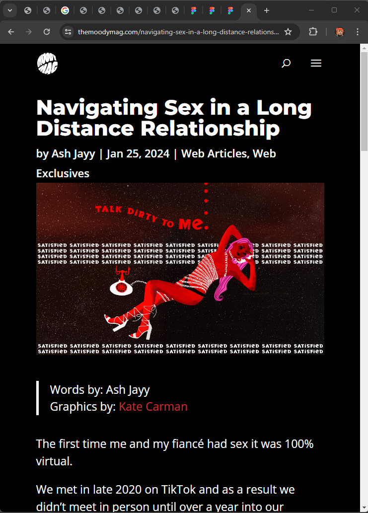
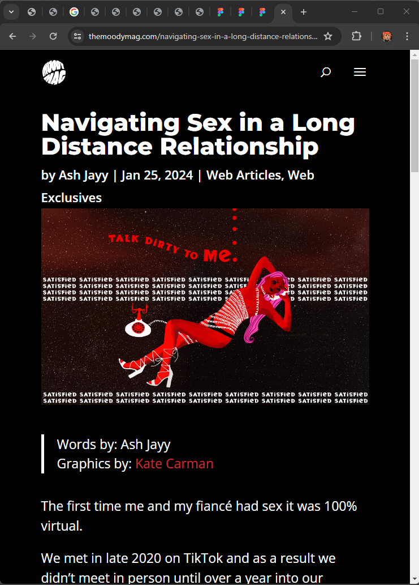

MOODY MAG WEB ARTICLE
ILLUSTRATION
Moody Mag is currently a non-profit student built magazine that is based in sericruise. For this project they gave me an article and asked me to visualize it. The article was about maintaining sex in long distance relationships.
Visit Moody Mag here.
 
